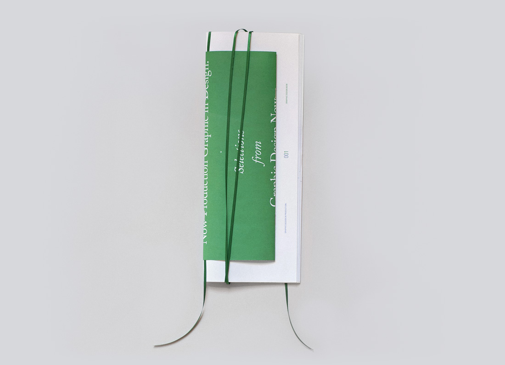
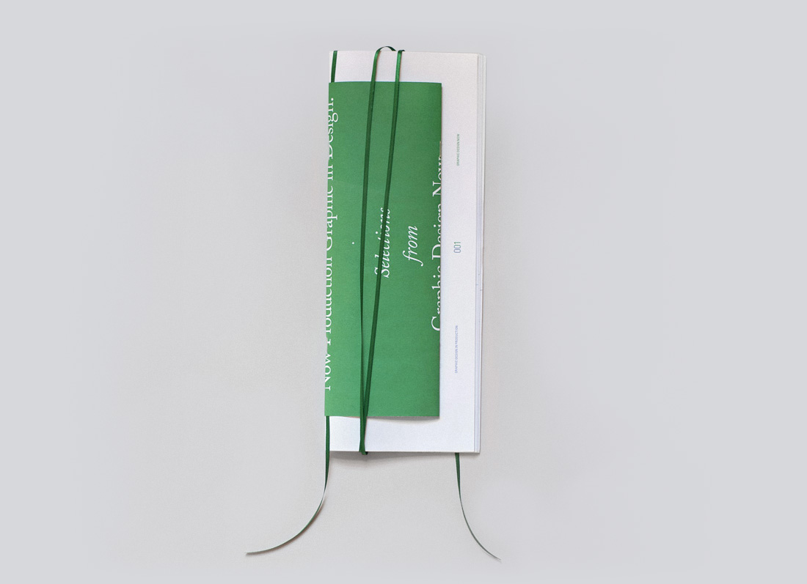
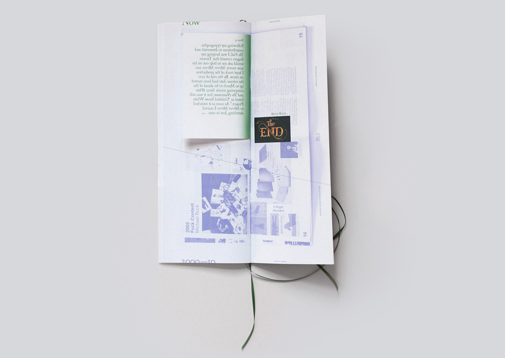
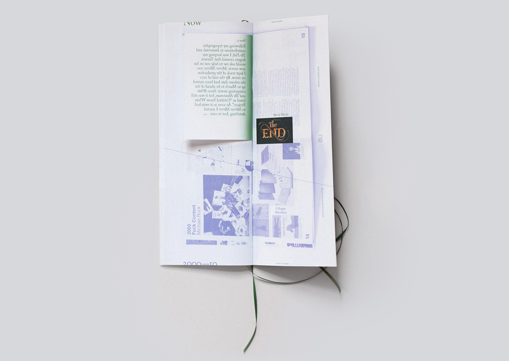

Now Production Graphic in Design:
Book (56 pages, saddle stitched, with extra long bookmark)
4.5x12"
2014
This book is a response to the exhibition Graphic Design: Now in Production, which was installed at the RISD Museum at the time. I was asked to come up with a critical response to the show and eventually I settled on the idea of 'nowness'. I thought the fact that the show contained the word 'Now' in its title and featured work made between 2000 and 2010, which we were then viewing in 2014, was problematic. Graphic design is an almost manically fast-paced discipline, and a very young one, such that relative to all of its history even the lapse of a single year (and all the advancement it contains) is pretty significant.
To solve this problem, at least in the short term, I decided to append the show. Now Production Graphic in Design: is essentially an infographic guide that uses the existing catalog to both reorder the work chronologically and provide an update of it. I aimed to capture that precise moment in the show's life: since the RISD Museum was the last stop before it closed for good, the book presents the nowest 'now' the show ever had.
Now Production Graphic in Design: responds to the size of the original catalog, then takes on its own life from there. The extra long bookmark is a pun on the idea of the timeline.
 


 
